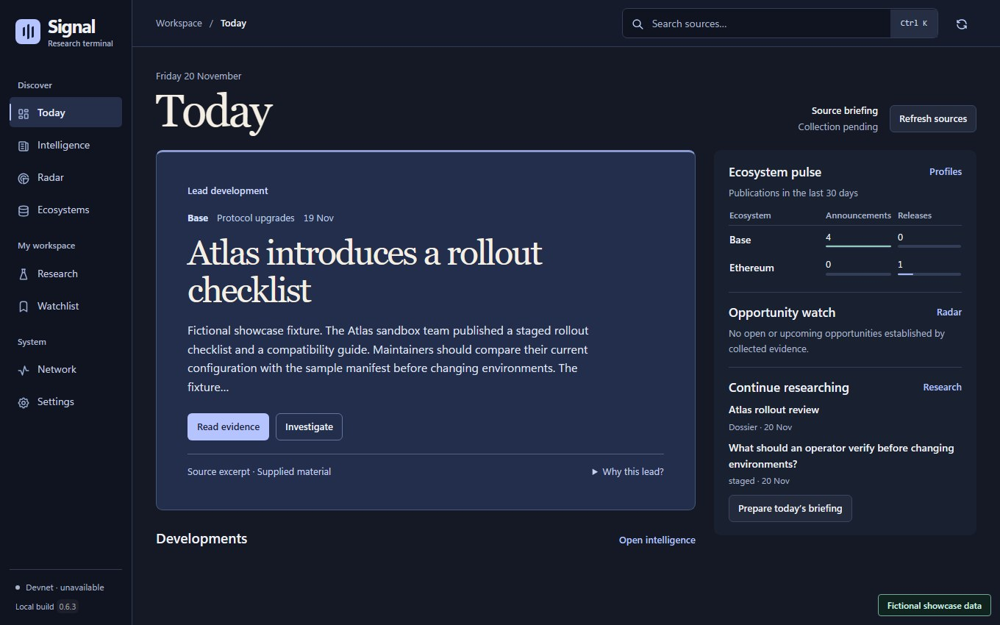
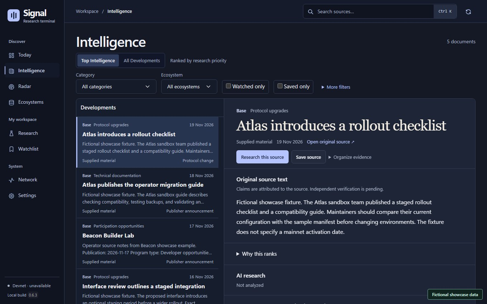

Crypto intelligence,
connected.
Discover meaningful ecosystem changes, check the sources, and keep the evidence together as an investigation evolves.
Explore the workstation
Inside the workstation
Six views of the same local application. The screenshots use fictional examples to demonstrate the workflow.



From development to dossier
Discover
Browse developments by relevance, ecosystem, or source.
Inspect
Read the source and check when its claims were published or reviewed.
Investigate
Choose a question and the evidence needed to answer it.
Save
Keep source versions, notes, and open questions in a dossier.
Monitor
Revisit dates, requirements, and new evidence as they change.
A local research workspace
built for evidence.
SIGNAL collects and normalizes sources, tracks opportunity lifecycles, and stores reproducible research plans in SQLite. This site showcases the workstation.
FLOP integration
SIGNAL is designed to use FLOP inference. The local app prepares source-bound prompts today. Live execution remains disabled pending verified testnet availability and activation.
SIGNAL is an independent project.